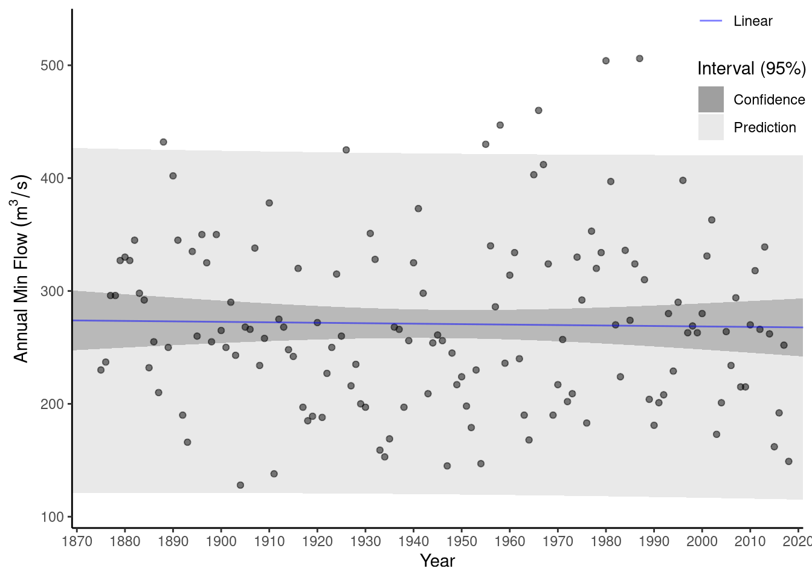

We begin by loading the Elbe and Gota flow time series and then calculating annual minimum flow for each. We are purposefully choosing to use the calendar year (beginning January 1) for this analysis rather than water year (beginning October 1 or November 1 for many northern hemisphere countries) because the water year breakpoint occurs near the seasonal minimum flow.
library(tidyverse)
library(hydroDrought)
library(lubridate)
### Filter to the rivers and create columns for dates
flow_df <- international %>%
filter(river == "Elbe" | river == "Gota") %>%
dplyr::select(river, data) %>%
unnest(cols = data) %>%
mutate(
year = year(time),
jdate = yday(time)
)
head(flow_df, 8)## # A tibble: 8 x 5
## river time discharge year jdate
## <chr> <date> <dbl> <dbl> <dbl>
## 1 Gota 1850-01-01 506 1850 1
## 2 Gota 1850-01-02 506 1850 2
## 3 Gota 1850-01-03 502 1850 3
## 4 Gota 1850-01-04 502 1850 4
## 5 Gota 1850-01-05 502 1850 5
## 6 Gota 1850-01-06 502 1850 6
## 7 Gota 1850-01-07 496 1850 7
## 8 Gota 1850-01-08 496 1850 8### Group by year and river and then calculate min and mean flow
flow_annual <- flow_df %>%
group_by(river, year) %>%
summarise(min_m3s = min(discharge, na.rm=TRUE), mean_m3s=mean(discharge, na.rm=TRUE), .groups = "drop_last")
head(flow_annual, 8)## # A tibble: 8 x 4
## # Groups: river [1]
## river year min_m3s mean_m3s
## <chr> <dbl> <dbl> <dbl>
## 1 Elbe 1875 230 583.
## 2 Elbe 1876 237 912.
## 3 Elbe 1877 296 695.
## 4 Elbe 1878 296 636.
## 5 Elbe 1879 327 805.
## 6 Elbe 1880 330 823.
## 7 Elbe 1881 327 918.
## 8 Elbe 1882 345 735.Consider the annual minimum flow for the Neu Darchau river (Fig. 7.8). By fitting a line of form Eq 7.43, the estimated slope is -0.0408 m3 s-1 per year, with a 95% confidence interval of -0.34 to 0.26 m3 s-1 per year. Thus, it is unclear whether the true trend is positive or negative and this is reflected in a p-value of 0.79 for the t-test of the slope coefficient. Because this p-value is well above 0.05, we accept the null hypothesis (Ho) that there is no significant trend in annual minimum flow.
### Filter to only the Elbe River
elbe_annual <- flow_annual %>%
filter(river == "Elbe")
### Create an OLS linear trend model
elbe_lm <- lm(min_m3s~year, data = elbe_annual)
### Show results
summary(elbe_lm)##
## Call:
## lm(formula = min_m3s ~ year, data = elbe_annual)
##
## Residuals:
## Min 1Q Median 3Q Max
## -144.497 -54.136 -7.038 53.504 236.888
##
## Coefficients:
## Estimate Std. Error t value Pr(>|t|)
## (Intercept) 350.15092 297.03574 1.179 0.24
## year -0.04078 0.15257 -0.267 0.79
##
## Residual standard error: 76.1 on 142 degrees of freedom
## Multiple R-squared: 0.000503, Adjusted R-squared: -0.006536
## F-statistic: 0.07146 on 1 and 142 DF, p-value: 0.7896### Insert columns for trend fit and residuals
elbe_annual <- elbe_annual %>%
mutate(fitted = fitted(elbe_lm)) %>%
mutate(resid = resid(elbe_lm)) %>%
print()## # A tibble: 144 x 6
## # Groups: river [1]
## river year min_m3s mean_m3s fitted resid
## <chr> <dbl> <dbl> <dbl> <dbl> <dbl>
## 1 Elbe 1875 230 583. 274. -43.7
## 2 Elbe 1876 237 912. 274. -36.6
## 3 Elbe 1877 296 695. 274. 22.4
## 4 Elbe 1878 296 636. 274. 22.4
## 5 Elbe 1879 327 805. 274. 53.5
## 6 Elbe 1880 330 823. 273. 56.5
## 7 Elbe 1881 327 918. 273. 53.6
## 8 Elbe 1882 345 735. 273. 71.6
## 9 Elbe 1883 298 724. 273. 24.6
## 10 Elbe 1884 292 680. 273. 18.7
## # … with 134 more rows### Create dataframe for confidence interval and predition interval
new_data <- data.frame(year = seq(1865, 2025, 1))
elbe_conf <- predict(elbe_lm, newdata=new_data, interval = "confidence", level = 0.95) %>%
as.data.frame() %>%
bind_cols(new_data) %>%
mutate(interval = "Confidence", level = 0.95)
head(elbe_conf, 8)## fit lwr upr year interval level
## 1 274.0878 246.4956 301.6801 1865 Confidence 0.95
## 2 274.0470 246.7231 301.3710 1866 Confidence 0.95
## 3 274.0063 246.9499 301.0626 1867 Confidence 0.95
## 4 273.9655 247.1760 300.7549 1868 Confidence 0.95
## 5 273.9247 247.4014 300.4480 1869 Confidence 0.95
## 6 273.8839 247.6260 300.1418 1870 Confidence 0.95
## 7 273.8431 247.8498 299.8364 1871 Confidence 0.95
## 8 273.8023 248.0728 299.5318 1872 Confidence 0.95elbe_pred <- predict(elbe_lm, newdata=new_data, interval = "prediction", level = 0.95) %>%
as.data.frame() %>%
bind_cols(new_data) %>%
mutate(interval = "Prediction", level = 0.95)Figure 7.8: Linear trend of annual minimum flow on the Elbe River at Neu Darchau. Light region is the prediction interval, while the darker region is the confidence interval, both using a 95% interval.
If we instead consider the annual minimum flow on the Göta River, the annual trend is 1.23 m3 s-1 per year (Fig. 7.9) with a 95% confidence interval of 0.875 to 1.59 m3 s-1per year. The t-test on this coefficient produces a p-value of 4 x 10 -9, meaning it is highly unlikely that such a strong trend would have appeared randomly in observations if there were no true underlying trend. We reject the null hypothesis, and accept the alternative hypothesis, that there is a significant trend in Göta River annual minimum flows. Remember that we set up our alternative hypothesis as a two-sided test (b1 ≠ 0), so we are testing whether there is a significant trend, regardless if it is positive or negative. We should make this clear when we report our findings. Of course, we should also report that the trend we found was that Göta River minimum flows have been increasing at an estimated rate of 1.23 m3 s-1per year since 1941.
### Filter to the Gota River and years after 1940
gota_annual <- flow_annual %>%
filter(river == "Gota") %>%
filter(year >= 1941)
### Create an OLS linear trend model
gota_lm <- lm(min_m3s~year, data = gota_annual)
### Show results
summary(gota_lm)##
## Call:
## lm(formula = min_m3s ~ year, data = gota_annual)
##
## Residuals:
## Min 1Q Median 3Q Max
## -60.468 -22.089 -4.605 17.556 90.773
##
## Coefficients:
## Estimate Std. Error t value Pr(>|t|)
## (Intercept) -2527.3124 331.5982 -7.622 5.82e-11 ***
## year 1.3387 0.1675 7.992 1.14e-11 ***
## ---
## Signif. codes: 0 '***' 0.001 '**' 0.01 '*' 0.05 '.' 0.1 ' ' 1
##
## Residual standard error: 33.31 on 76 degrees of freedom
## Multiple R-squared: 0.4567, Adjusted R-squared: 0.4495
## F-statistic: 63.88 on 1 and 76 DF, p-value: 1.139e-11### Insert columns for trend fit and residuals
gota_annual <- gota_annual %>%
mutate(fitted = fitted(gota_lm)) %>%
mutate(resid = resid(gota_lm))
### Create dataframe for confidence interval and predition interval
new_data <- data.frame(year = seq(1935, 2025, 1))
gota_conf <- predict(gota_lm, newdata=new_data, interval = "confidence", level = 0.95) %>%
as.data.frame() %>%
bind_cols(new_data) %>%
mutate(interval = "Confidence", level = 0.95)
gota_pred <- predict(gota_lm, newdata=new_data, interval = "prediction", level = 0.95) %>%
as.data.frame() %>%
bind_cols(new_data) %>%
mutate(interval = "Prediction", level = 0.95)
plot_ribbon <- gota_conf %>%
bind_rows(gota_pred)
plot_line <- new_data %>%
mutate(line_fit = predict(gota_lm, newdata=new_data), Data = "Linear") Figure 7.9: Linear trend of annual minimum flow on the Gota River. Light region is the prediction interval, while the darker region is the confidence interval, both using a 95% interval.
Although this is the same river and low flow statistic modelled in Section 7.2.4, this period (1941-present) occurs after the period 1807-1937 modelled in Section 7.2.4. We purposefully excluded all data after 1940 in Section 7.2.4 because of its non-stationary trend, whereas this non-stationary nature is now our primary focus.